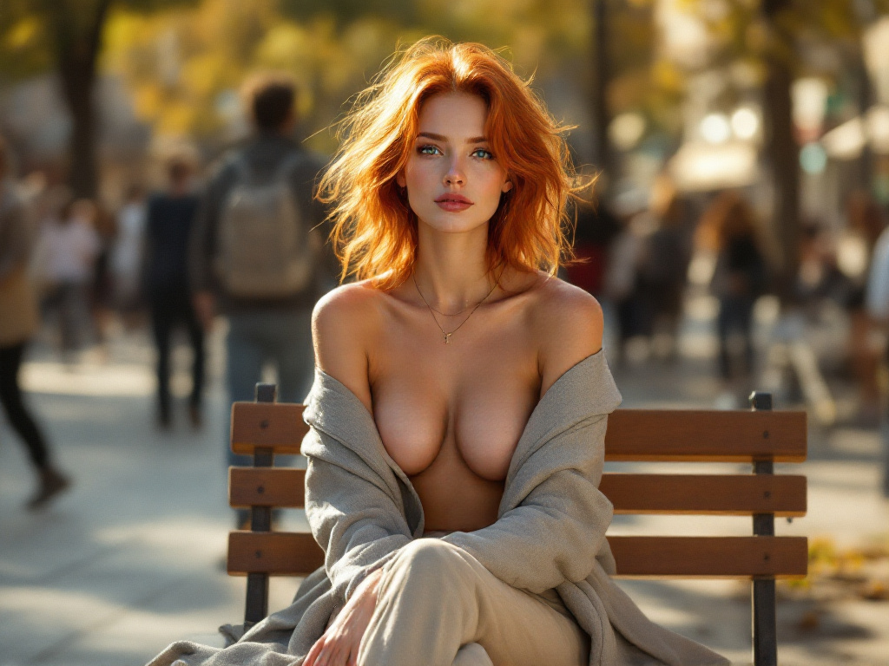
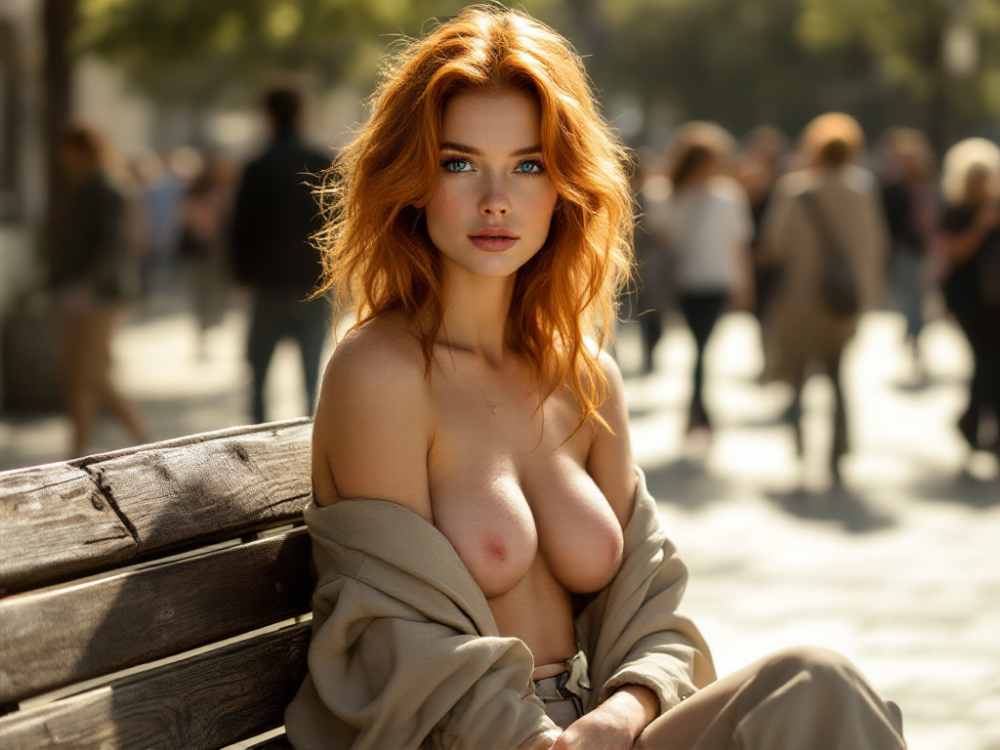
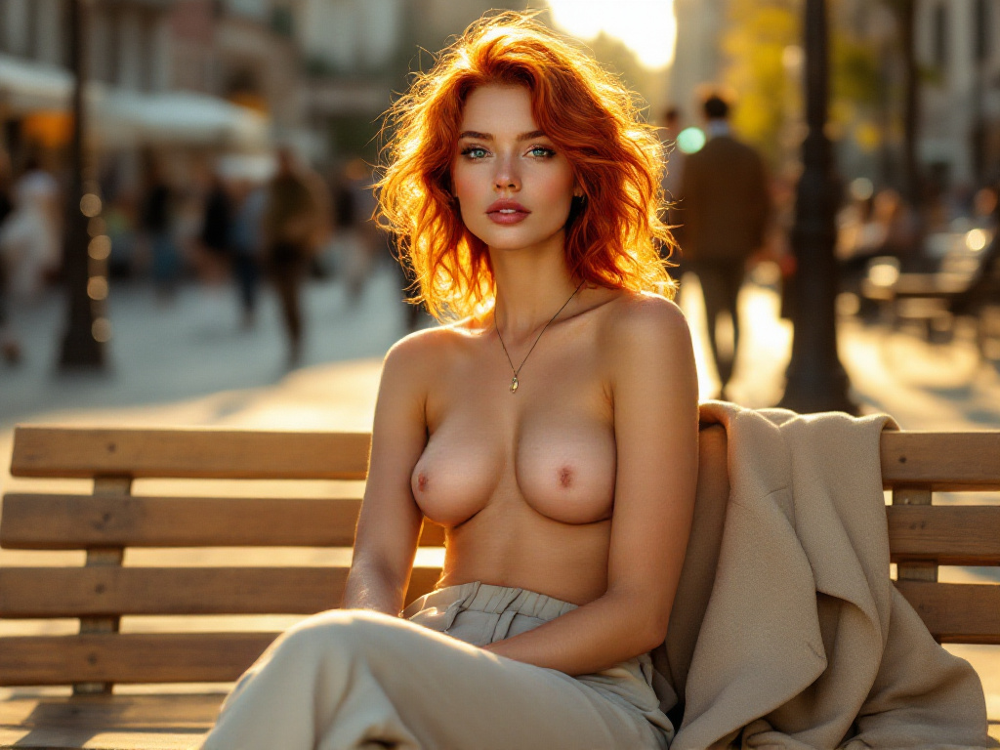
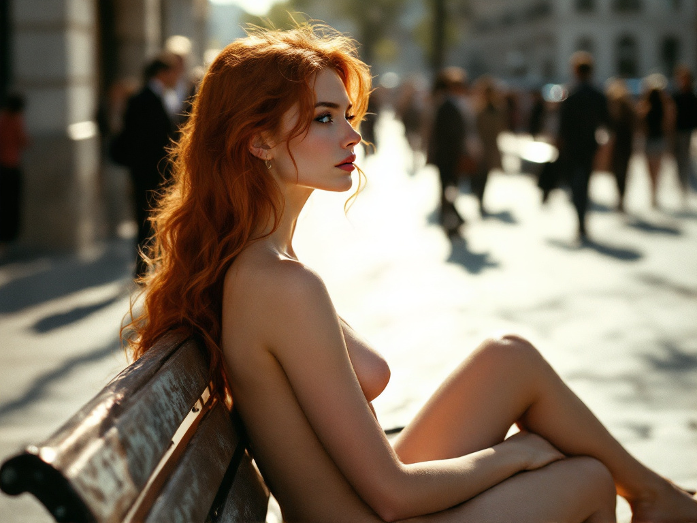

I. Városi intimitás
A város zaján túli csend. A test jelenléte egy padon, egy fal tövében, egy megállított pillanatban, ahol a tekintet találkozik a városi ritmussal. Intimitás születik ott, ahol mindenki csak siet.

Kávé illata a városban
Csukott szemmel, egy bögre gőzölgő kávé mellett – a reggeli csend és belső figyelem pillanata egy nyüzsgő utcában

Virágos terasz csendje
A városi zajon túl, virágokkal ölelt reggel, ahol a fény és a színek megnyugvást ígérnek.

Napfény és tengerpart
A part menti szabadság érzete, ahol a modell tekintete egyszerre figyel és derűs nyitottságot áraszt
X. A város szívdobbanása
Zaj, ritmus, emberi háttér. Ebben a fejezetben a test nem különül el a városi élet zajától, hanem annak lassú szívveréseként jelenik meg. Az egyén csendje a tömeg zajában.

Reggeli visszhangok
Egy fapulton gőzölgő kávé, a háttérben élet zajlik, de itt és most csak a jelen számít – ez a kép egy reggeli pillanat intimitását őrzi meg.

Nyugalom fények közt
A modell a belső nyugalom fényében fürdik, a háttér finom életképei keretezik az alakját – ez a jelenet a városi csend ritka pillanata.
XIII. Városi pillanatok – A nyugalom és szabadság ötvözete
Ez a fejezet a lelassulásról szól. A padon ülő alak, a fénybe néző pillantás, a járókelők elmosódó árnyai – mind egy belső időt jeleznek, amely nem igazodik a város óráihoz.

A város ritmusában
A nyüzsgés közepén is meg lehet találni a csendet.

Találkozás a tekintetekkel
A tekintet, amely áthatol a város zaján.

Aranyóra a téren
A délutáni fényben a város is megáll egy pillanatra.

Csend egy pillanatban
Egy gondolatnyi pihenő a nap forgatagában.

Oldalról szemlélve
A város lüktet, ő mégis csak figyel.